6 LLMs · 3 VLMs
3B–70B, including a 70B 10–50% sweep
Preprint · Cross-Module Structured Pruning
Cross-Module Co-Pruning Curvature: a calibration-only method that prunes attention and FFN units jointly — by preserving the curvature of the edges between units, not just ranking the nodes.
Across 6 LLMs (3B–70B) and 3 VLMs, CoCurve ranks first in 53/60 corpus comparisons (15/15 at 70B), and after the same lightweight recovery its structures stay strongest through 50% pruning. The catch everyone misses: the decisive curvature lives in the attention↔FFN edges, not the nodes.
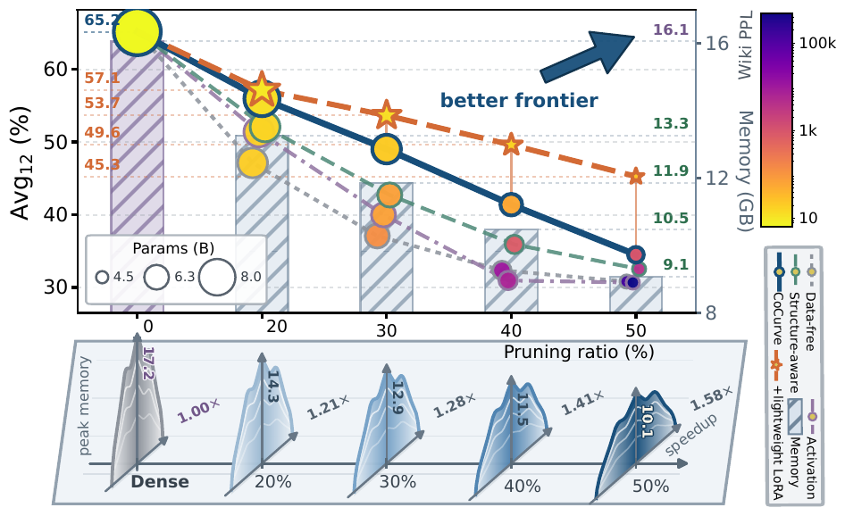
3B–70B, including a 70B 10–50% sweep
3 perplexity corpora · 12 language · 7 multimodal
Corpus comparisons ranked first (15/15 at 70B)
Full edge matrix, no pairwise sweeps
Prefill throughput / peak memory at 50%
Structured pruning compresses LLMs by deleting whole units — attention heads and FFN channel groups. Almost every method scores each unit in isolation, implicitly assuming that the damage of pruning a set is additive. We show this is the wrong granularity for Transformers: because every sublayer reads from and writes to a shared residual stream, two individually weak units can be jointly indispensable, and two salient ones partly redundant.
CoCurve (Cross-Module Co-Pruning Curvature) casts structured pruning as set-dependent predictive risk over a unified inventory of attention heads and FFN groups. A second-order Taylor expansion of the token-level KL yields a single Fisher matrix: its diagonal is classical node saliency, while its off-diagonal entries are co-pruning curvature edges — the extra damage from removing two units together, conditioning each decision on the units already removed.
We prove this entire edge matrix is a Gram product of single-unit ablations, recovering it from just M ablations with no pairwise sweeps, gradients, or labels — then prune in one shot under a shared budget. Across 6 LLMs (3B–70B) and 3 VLMs, over 3 perplexity corpora, 12 language tasks and 7 multimodal benchmarks, CoCurve ranks first in 53/60 corpus comparisons and moves the quality–deployment frontier.
The standard recipe gives every unit an importance score and assumes set damage is additive: ΔL(S) ≈ Σ ΔL(u). But a Transformer is a coupled system — every sublayer reads and writes one shared residual stream, so pruning effects reinforce or cancel. Pruning a set is a joint operation, not a sum.
The consequence: a node-first ranker inevitably co-prunes a low-saliency bridge unit (87 of 768 on Llama-3.1-8B; 3.5–14.5% across ten models) together with the units that depend on it. Two weak-looking units can be jointly indispensable; two salient ones partly redundant. Modeling the interactions is what unlocks further progress along the frontier.
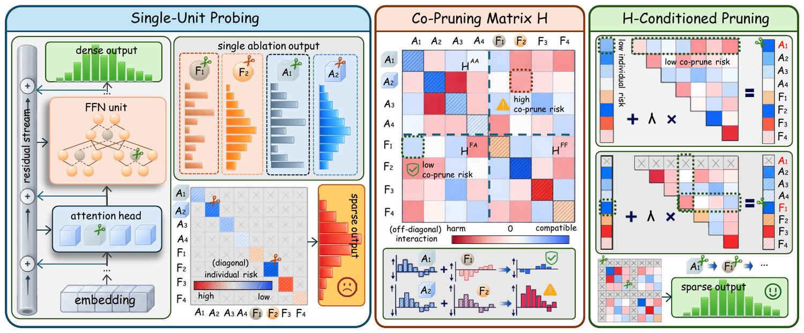
Because the masked student equals the teacher at zero pruning, both the risk and its gradient vanish there, so the leading term of the token-level KL is purely second order: R(s) ≈ ½·sᵀH·s. The single matrix H carries everything.
Run M single-unit ablations on a small calibration set; extract Fisher-weighted delta-logit features.
Output: the features whose Gram matrix is H.
Form the single Fisher matrix — diagonal saliency and off-diagonal co-pruning edges — with no pairwise sweep.
Output: node saliency + attention↔FFN edges together.
Cost-normalized greedy under a shared budget, λ selected from calibration risk; physically remove units.
Result: a jointly-pruned subnetwork — slicing is bit-identical to masking.
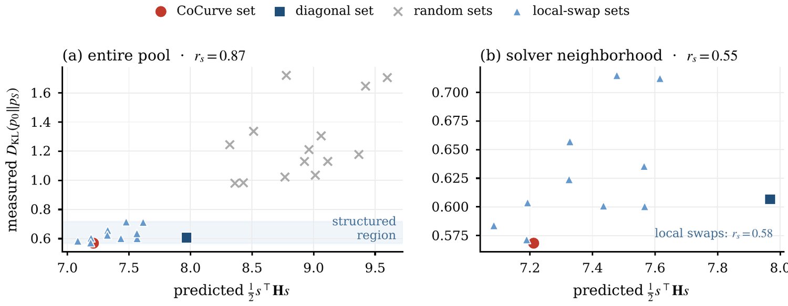
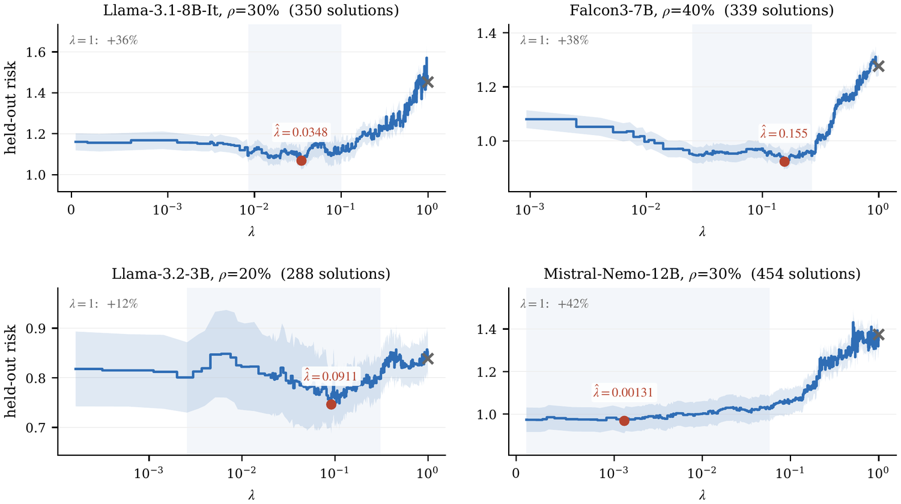
56.0 Avg₁₂ vs 54.5 best baseline (dense 65.2) · Wiki 12.9
Leads all 8 Avg₁₂ blocks on the 8B/24B models from 20–50%.
Across 6 LLMs (3B–70B) — 15/15 at 70B
Matched-quality interpolation permits 2.2–6.6 more pruning points in 9/10 cases.
Bridge removal degrades 19/20 capability groups by up to 23.7 points
Organized within- and cross-module edges reverse real pruning decisions across 10 LLMs and 7 VLMs.
Hint: scroll horizontally to view all columns on smaller screens. Cmn₄ = commonsense (4 tasks), Sci₃ = science QA (3), Read₄ = reading (4), MMLU = knowledge (1). Best baseline = LLM-Pruner.
| Model | Method | Wiki ↓ | Cmn₄ ↑ | Sci₃ ↑ | Read₄ ↑ | MMLU ↑ | Avg₁₂ ↑ |
|---|---|---|---|---|---|---|---|
| Llama-3.1-8B-Instruct | Dense | 6.4 | 70.9 | 60.1 | 67.6 | 47.8 | 65.2 |
| Best baseline | 13.2 | 62.2 | 44.8 | 58.5 | 36.8 | 54.5 | |
| CoCurve | 12.9 | 63.7 | 48.0 | 58.6 | 38.5 | 56.0 | |
| Mistral-Small-24B | Dense | 4.7 | 73.5 | 63.4 | 65.9 | 52.3 | 66.7 |
| Best baseline | 25.8 | 65.5 | 55.2 | 59.8 | 43.7 | 59.2 | |
| CoCurve | 9.0 | 67.8 | 56.3 | 60.9 | 43.5 | 60.6 |
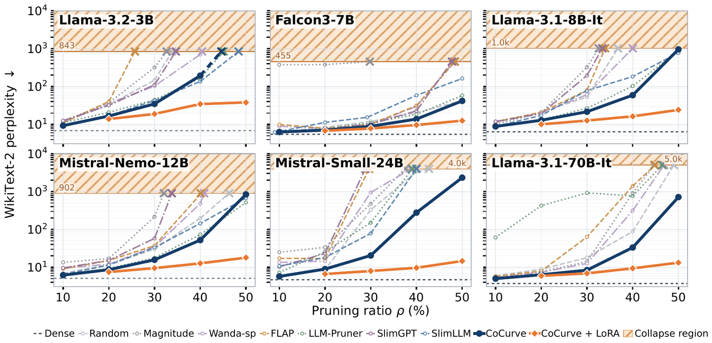
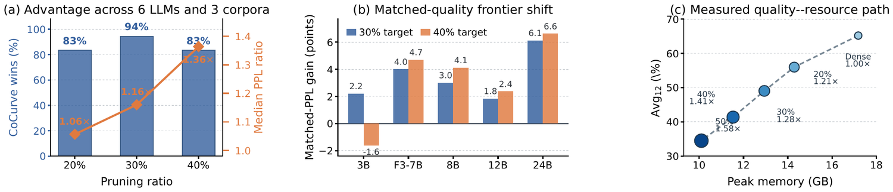
Selection is calibration-only, but the pruned checkpoint can be refined with the same lightweight LoRA recovery given to every method. CoCurve's retained structures remain strongest all the way through 50% pruning: on Llama-3.1-8B the recovery raises Avg₁₂ by 10.8 points and cuts selection-only perplexity from 41.7–4616.9 down to 12.6–38.0.
Because CoCurve starts from a healthier subnetwork, recovery converges to a higher plateau — the head start compounds rather than washing out.
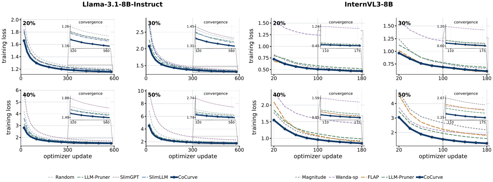
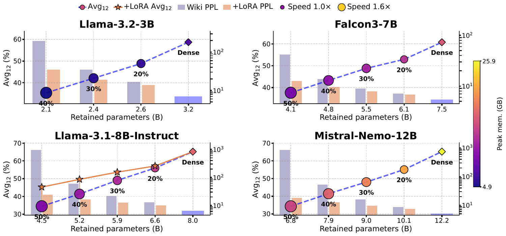
CoCurve applies unchanged to the language tower of vision–language models. Across three VLMs it leads every Avg₇ block along the pruning sweep, and at 30% improves over the strongest external pruner by 4.9, 10.7, and 1.1 points respectively.
The cross-module coupling is not a language-only artifact — the mechanism analysis spans 7 VLMs and finds the same organized edge structure.
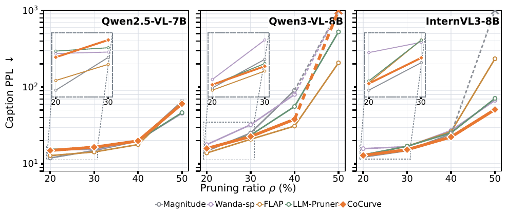
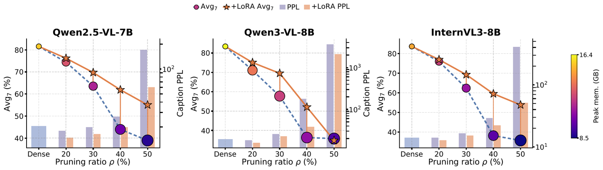
On Llama-3.1-8B-Instruct at 20%, a diagonal-only variant (node saliency alone) reaches 13.1 perplexity; adding the co-pruning edges lowers it to 12.9 and lifts Avg₁₂ by +2.0 points. At 30% the gap widens — diagonal-only 26.0 → CoCurve 21.6.
It is specifically the attention↔FFN cross-block that is load-bearing: across five language models the mean attention–FFN edge magnitude is 0.74–0.98× the within-module mean, and matched low-saliency, high-coupling (“bridge”) removals degrade 19/20 capability groups by up to 23.7 points.
The edge bonus grows as FFN channels become less redundant — a quantity read from the calibration matrix alone, before any benchmark. Low-redundancy models (Falcon3-7B 0.028, Llama-3.1-8B 0.074) take full edges (λ=1); higher-redundancy ones (Qwen2.5-14B 0.198) damp toward the OBD diagonal.
So λ is chosen without labels, and the method degrades gracefully to a strong node-saliency selector exactly where edges would not help.
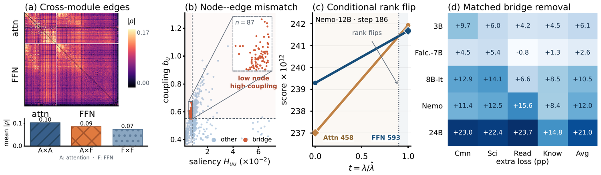
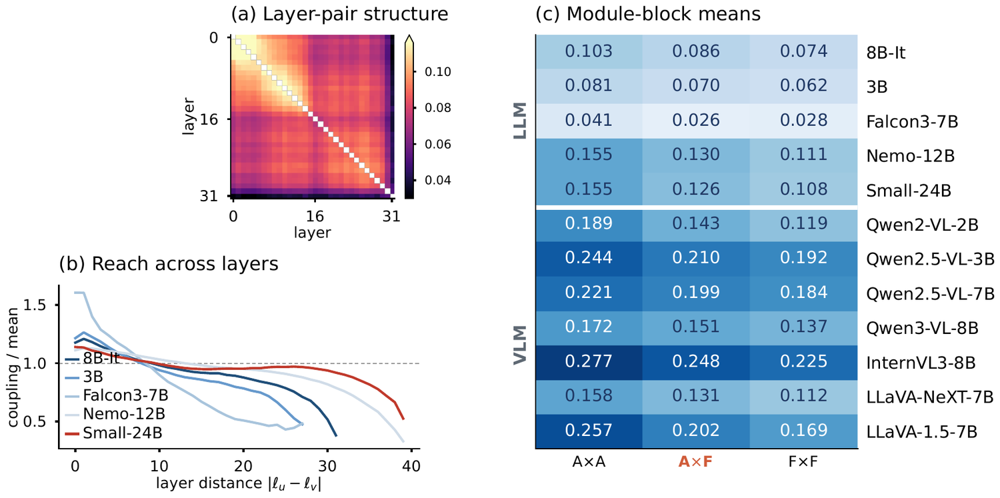
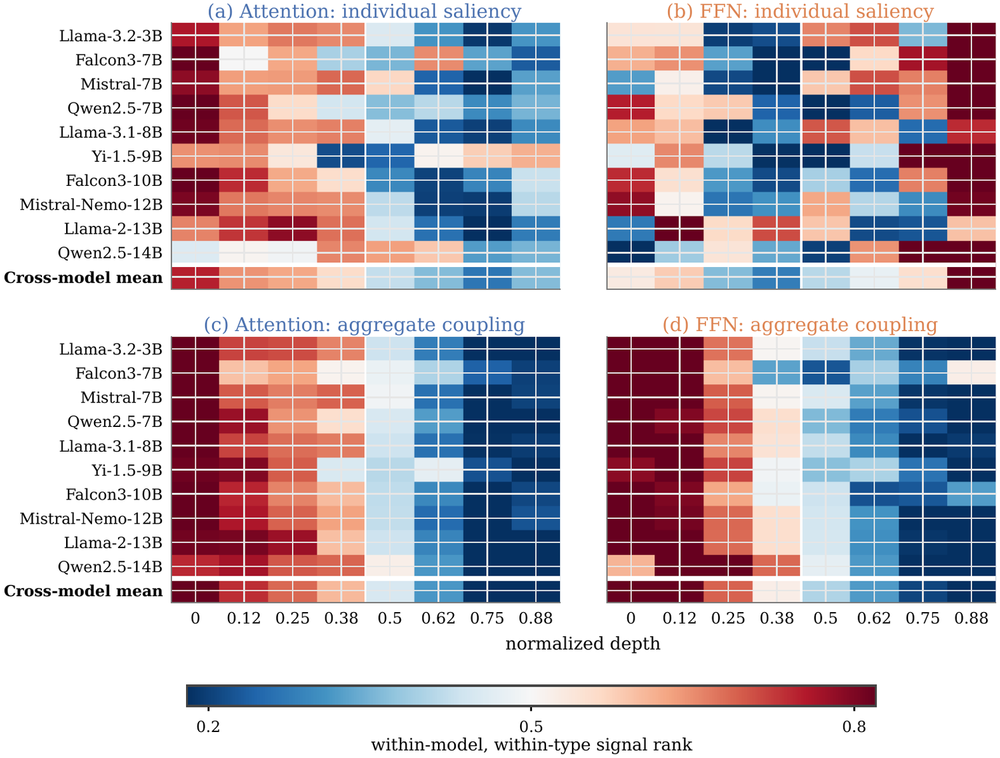
| Variant | ρ | Wiki ↓ | Avg₁₂ ↑ |
|---|---|---|---|
| Dense | — | 6.4 | 65.2 |
| Diagonal only (λ=0) | 20% | 13.1 | 55.1 |
| Full CoCurve (λ=1) | 20% | 12.9 | 56.0 |
| Diagonal only (λ=0) | 30% | 26.0 | 48.7 |
| Full CoCurve (λ=1) | 30% | 21.6 | 49.0 |
Module choice matters too: on Falcon3-7B, attention-only pruning collapses (WikiText 851) while FFN-only stays at 7.07 — CoCurve's shared budget trades across modules automatically.
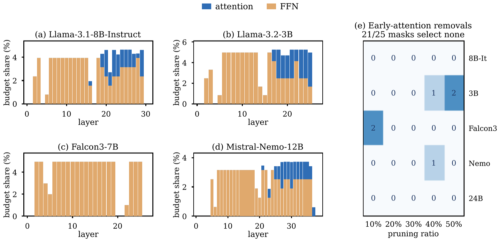
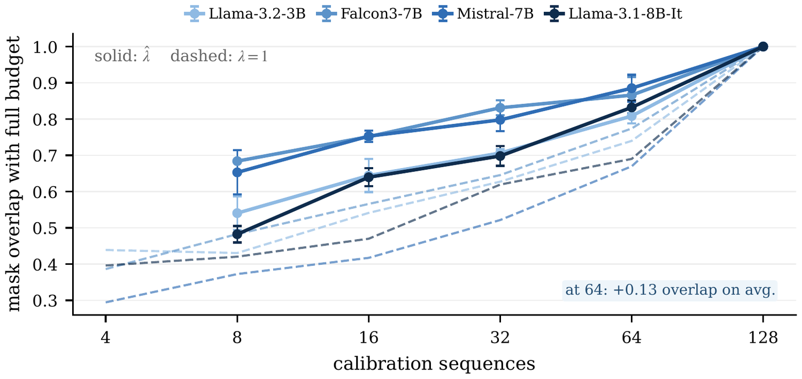
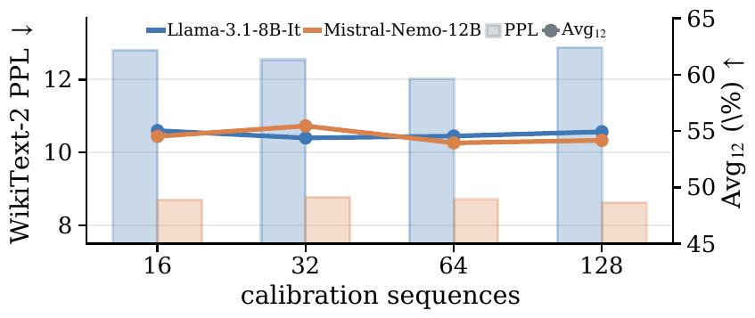
Available on arXiv:2607.17568.
Reference implementation and one-command reproduction on GitHub.
A narrated, animated ~7-minute video tour — the coupling problem, the co-pruning curvature edges, and the results, built for a general audience.
For questions about this project, contact zhiren001@e.ntu.edu.sg.